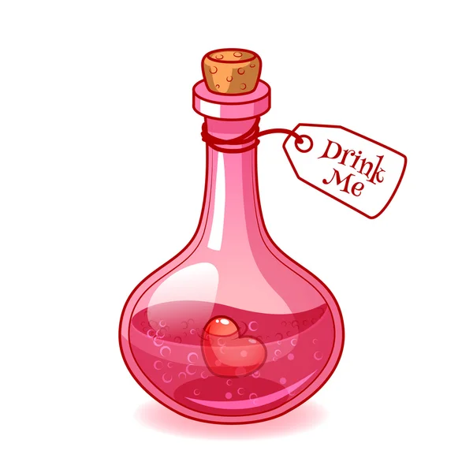

Love potion

Description
You never know when a love potion could come in handy
I developed this potion in late 2013.
I have since had 5 marriage proposals.
Ingredients
- Tears of first heartbreak
- Crushed rose petals
- A lock of your hair
Steps
- Prepare all ingredients and mix them in a small cauldron over a roaring fire
- Leave to simmer for three days
- Bottle and preserve until needed by storing in a cool dry place.
- To use: drop three drops into your future lovers eye as they sleep, preferably during REM sleep.